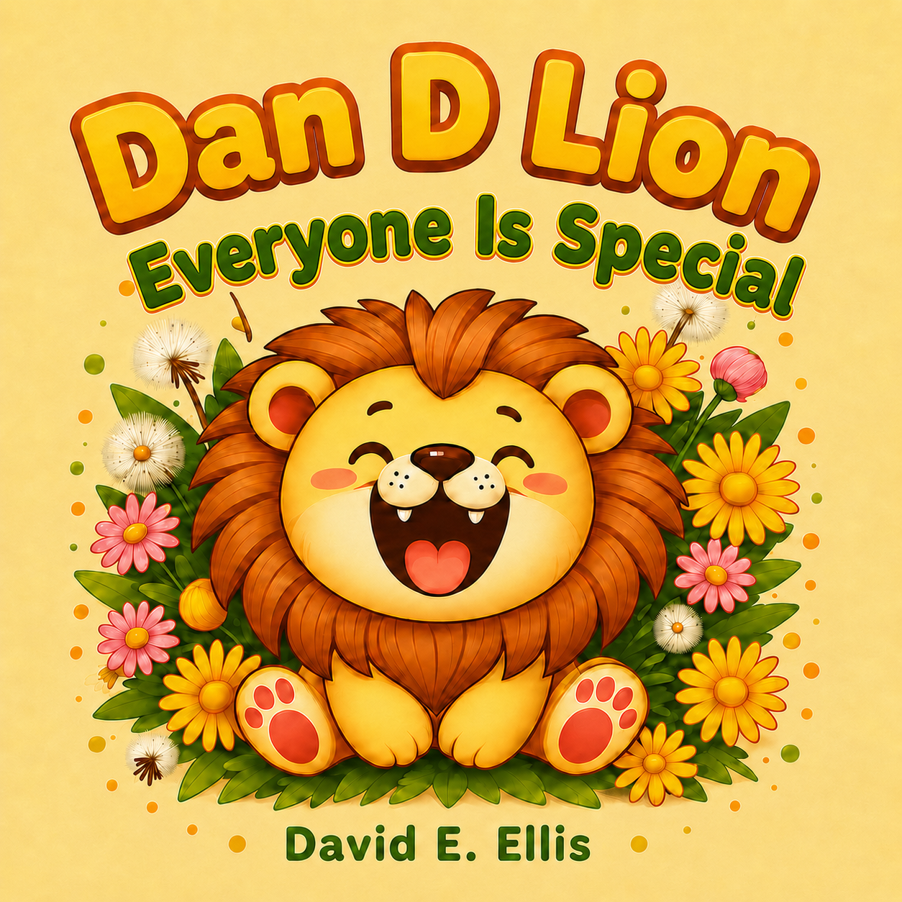

Dan D Lion Everyone Is Special is a warm and gentle picture book about friendship, belonging, and discovering what makes each of us special.
Dan D Lion loves spending time with his friends in the sunny garden. Bee can buzz from flower to flower. Ladybug has beautiful spots. Butterfly has colorful wings. Bunny can hop, and Bluebird can sing.
But as Dan looks at all the wonderful things his friends can do, he begins to wonder...
What is special about me?
Feeling a little left out, Dan soon discovers that his friends see things in him that he has forgotten to notice — his magnificent golden mane, his mighty roar, and something even more important: the happy, friendly laugh that makes everyone smile.
With bright, cheerful illustrations and simple read-aloud text, Dan D Lion Everyone Is Special is a reassuring story for toddlers and preschoolers about friendship, self-confidence, and understanding that everyone has something special to share.